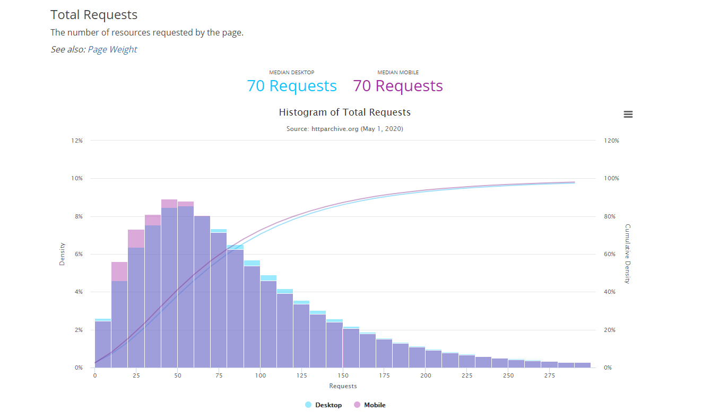
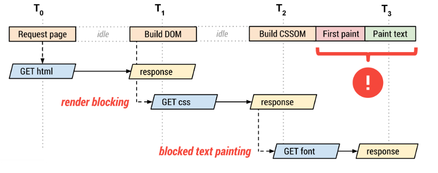

What are web fonts?
When you've ever opened a document in Word or Powerpoint you must have seen the option to select several different fonts, like Times New Roman, Courier or Arial to just name a few. These are fonts that are installed on your computer. Some fonts are exclusive to the operating system you are running, but lots of them can be used with either a Windows or MacOS operating system.
When we place this in the context of the web we have to make an important decision. Fonts that are pre-installed, (and cross-compatible) on a device are known as web-safe fonts. Selecting one of these fonts will always work, because they are already installed on your users device. Using these fonts is very good for your performance as well, but also can make your website feel more generic. Sometimes you look for a font that stands out from the standard fonts.
Thats where web fonts come in. Web fonts are custom fonts anyone can create or licensed from another creator. Using a web-font requires the browser to download the font, before they can be displayed.
The issue with web fonts
Web fonts are great for making a unique website that looks great, but come at a big performance cost, especially when you want to use multiple web fonts together. Your browser easily needs to download multiple MB's to just download a single font.
Each font you use is an additional resource that visitors must download when accessing your site, adding to the time it takes to load your pages. " - WP Rocket
Web apps in general make a lot of requests nowadays. Every pages has a median of 70 requests per page load. Every newly used web font adds 1 extra request to the load time. - http archive. 
Optimizing web fonts
The render tree
By default, fonts are only rendered when the render tree is completely constructed.
Lazy loading of fonts carries an important hidden implication that may delay text rendering: the browser must construct the render tree, which is dependent on the DOM and CSSOM trees, before it knows which font resources it needs in order to render the text. As a result, font requests are delayed well after other critical resources, and the browser may be blocked from rendering text until the resource is fetched.
Web fonts are rendered after the Document Object Model (DOM) is fully constructed, requests for the CSS, JS and other resources are dispatched. After thate The CSS Object Model (CSSOM) will be constructed and it will combine it with the DOM to construct the render tree. Now finally the requests are sent for the web fonts and the first content is painted on the page. If the font is not yet available, you won't see anything. When it does finally paint the pixels you will see the fallback text gets replaced by the web font.
Preloading web fonts
It's possible to trigger a request early in the critical rendering path, without needing to load the CSSOM. This can be done using a new feature by adding the following HTML to your head.
<link rel="preload">
Not all browsers support this feature however, so use with care.
Specifying fallbacks
When a font takes more time to load then usual you can specify what the browser should do when the time for the download times out. A request for a font usually times out after 3 seconds, but this might differ per browser.
The font display timeline
Font display specifies how a font file is loaded and displayed by the browser. The font display timeline can be devided into three periods.
- The font block period - When a font is not loaded, every element that tries to use the font must use an invisible font instead. When the font is successfully loaded during this period the elements will start using the font as normal.
- The font swap period - When the font is not loaded, every element that tries to use this font must instead use a fallback font instead. When the font is successfully loaded during this period the elements will start using the font as normal.
- The font failure period - When the font is not loaded, The font will be marked as failed and every alement that tried to use this font will use a fallback instead. When the font is successfully loaded during this period the elements will start using the font as normal.
@font-face {
font-family: 'Futura';
font-display: auto; /* or block, swap, fallback, optional */
src: url('../fonts/futura/Futura-book')
}
Give priority to your local fonts
When you already have a web font installed it doesn't make much sense to download it again. When adding font-faces you can specify which local font you want to use first, If the user doesn;t have it installed it can still download it as usual. Let's take the code I've posted above and modify it a bit to first take the local font.
@font-face {
local('Futura Book'),
font-family: 'Futura';
font-display: auto; /* or block, swap, fallback, optional */
src: url('../fonts/futura/Futura-book.woff2')
}
Now that will definitely improve load time for user who have this font already installed.
Use an optimized font format
Using the right font format speeds up load time for your font. The problem here is that not all font formats have support on all browsers, so you need to make sure you provide fallbacks for when the faster font format is not supported. There are four font formats to look at:
- Embedded Open Type (.eot) - Designed by Microsoft, only IE support.
- True Type Font (.ttf) - Very old format (1980's), has partial IE support.
- Web Open Font Format (.woff) - Developed in 2009, which is essentially OpenType or TrueType with compression and additional metadata, has widespread support but is not available in some older browsers.
- Web Open Font Format 2 (.woff2) - Improvement on WOFF 1 that has an average 30% reduction in file size. Many browsers still need to support it.
Use a font loading API
And now you think you're set. You've added all the optimizations using smart HTML and CSS to speed up load time for your web fonts. Or so you though, because with JS there are more opportunities on the horizon. Font loading API's come with their own scripting interface that can define and manipulate CSS font faces, track their download progress, and override their default lazyload behavior. The code below immediately fetches the font.
const font = new FontFace("Futura", "url(./fonts/futura-book.woff2)", {
style: 'normal', unicodeRange: 'U+000-5FF', weight: '400'
});
// don't wait for the render tree, initiate an immediate fetch!
font.load().then(function() {
// apply the font (which may re-render text and cause a page reflow)
// after the font has finished downloading
document.fonts.add(font);
document.body.style.fontFamily = "Futura, serif";
// OR... by default the content is hidden,
// and it's rendered after the font is available
const content = document.getElementById("content");
content.style.visibility = "visible";
// OR... use your own render strategy!
});
Code modified from: https://developers.google.com/web/fundamentals/performance/optimizing-content-efficiency/webfont-optimization
Add some proper caching
Web fonts are pretty much static files that aren't frequently updated. Because you don't have to download it again it will limit the amount of total requests on your page. If you already are using a service worker, you can modify it to also cache web fonts. I've written more about caching web fonts in a previous readme from one of my previous projects. It can be found on my repo.
Conclusion
Optimizing web fonts is very important if you strive to a performant website. Understanding how en when fonts are being rendered is only the first step of the solution. Optimizing web fonts includes lots of different approaches that ultimately makes it a complex issue. I've tried to provide some simple solutions that will definitely speed up your load time, but do understand there is much more I haven't covered yet.